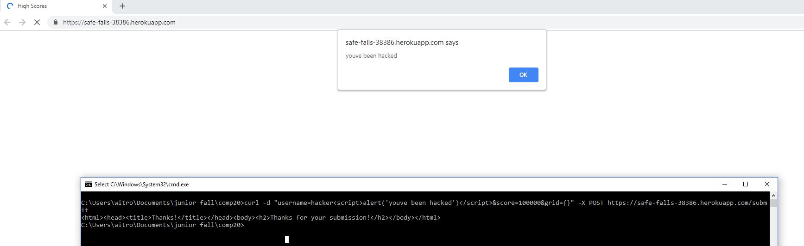

Tufts Comp20: Assignment 4
By: Billy Witrock
Introduction
My job is to find sercurity issues in my partner's 2048 Game server.
Methodology
My methodology is to look at each path my partner's server has and to one at a time look for a way to attat it. All of my attacts were done using curl in the commmand line or using google chrome.
Issues Found
Database Injection
- Location of the problem was in the GET "/scores.json" method.
- The severity of the issue in my opinion is medium. I beleive it is a high risk problem in general, however, when it comes to this application the data is not super sensitive.
- Description of the issue: I found this issue by first looking at the homepage where the top ten scores are displayed. There I noticed that none of the highscores had a username of "hello". So I then tried to access all data with a username not equal to "hello", which gave me back all the data.
- Proof:

- Resolution: A resolution to the problem would be to strip all specail charaters before using the input given in the database. This would take out the "[]" so the command would not work.
XSS (Cross-site Scripting)
- Location of the problem was in the POST "/submit" method
- The severity of this problem is high. I believe this is a major problem because even though I only had the browser make an alert, you could exicute any Javascript.
- I found the issue by looking at the code for the server and noticing that they trusted. As soon as I saw that I knew I would be able to put specail charaters such as "<" and ">" which allow me to add script tags.
- Proof: 
- To fix this problem the server shouldn't trust user input and therefore should strip out all specail charaters so script tags can not be added.
Access-Conrol-Allow-Origin: * error
Conclusion
My Conclusion is that this website can easily be hacked. I believe since it is weak to XSS, injection, and CORS errors, it is an overall weak website. The main problem it has is that it trusts all user input. If the server chose not to trust any user input, many of it's problems will be eliminated
Reference
- Piazza
- developer.mozilla.org
- owasp.org top ten list